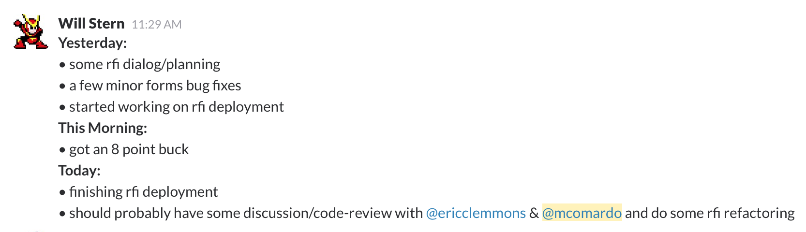
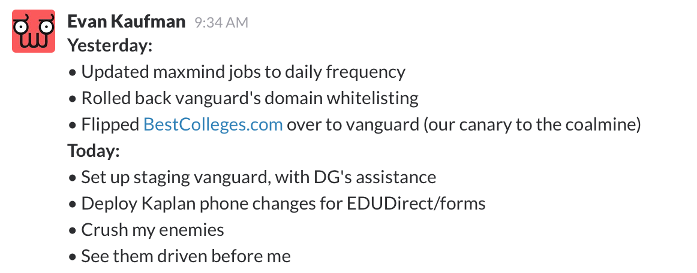

<!doctype html>
<html lang="en">

	<head>
		<meta charset="utf-8">

		<title>reveal.js – The HTML Presentation Framework</title>

		<meta name="description" content="A framework for easily creating beautiful presentations using HTML">
		<meta name="author" content="Hakim El Hattab">

		<meta name="apple-mobile-web-app-capable" content="yes">
		<meta name="apple-mobile-web-app-status-bar-style" content="black-translucent">

		<meta name="viewport" content="width=device-width, initial-scale=1.0, maximum-scale=1.0, user-scalable=no, minimal-ui">

		<link rel="stylesheet" href="css/reveal.css">
		<link rel="stylesheet" href="css/theme/league.css" id="theme">

		<!-- Code syntax highlighting -->
		<link rel="stylesheet" href="lib/css/zenburn.css">

		<!-- Printing and PDF exports -->
		<script>
			var link = document.createElement( 'link' );
			link.rel = 'stylesheet';
			link.type = 'text/css';
			link.href = window.location.search.match( /print-pdf/gi ) ? 'css/print/pdf.css' : 'css/print/paper.css';
			document.getElementsByTagName( 'head' )[0].appendChild( link );
		</script>

		<!--[if lt IE 9]>
		<script src="lib/js/html5shiv.js"></script>
		<![endif]-->
	</head>

	<body>

		<div class="reveal">

			<!-- Any section element inside of this container is displayed as a slide -->
			<div class="slides">

				<section data-markdown>
			    <script type="text/template">
## intro to agile
Mitch Comardo - Nov. 2015
			    </script>
				</section>
				<section data-markdown>
			    <script type="text/template">
## why am i giving this talk?

- Introduce agile concepts
- Most implement with too much rigor

_ Do what makes your team produce higher quality products, faster. _ <!-- .element: class="fragment fade-in" data-fragment-index="1" -->
			    </script>
				</section>
				<section data-markdown>
			    <script type="text/template">
## The Manifesto

- ** Individuals and interactions ** over processes and tools
- ** Working software ** over comprehensive documentation
- ** Customer collaboration ** over contract negotiation
- ** Responding to change ** over following a plan
			    </script>
				</section>
				<section data-markdown>
			    <script type="text/template">
## Key Principles of Agile

- The best architectures, requirements, and designs
emerge from self-organizing teams
- At regular intervals, the team reflects on how
to become more effective, then tunes and adjusts
its behavior accordingly
- Continuous attention to technical excellence
and good design enhances agility
- Simplicity -- the art of maximizing the amount
of work not done -- is essential.
			    </script>
				</section>
				<section data-markdown>
			    <script type="text/template">
## scrum (rugby)


_**scrum** is a means of restarting play... in effort to move the ball forward (and gaining possession)_
			    </script>
				</section>
				<section data-markdown>
			    <script type="text/template">
## scrum (software)


			    </script>
				</section>
				<section data-markdown>
			    <script type="text/template">
## Sprint Planning (Estimation)

- Estimations are wrong! <!-- .element: class="fragment fade-in" data-fragment-index="1" -->
- In Scrum, estimations are recorded as story points <!-- .element: class="fragment fade-in" data-fragment-index="2" -->
- Story points follow fibinocci sequence (e.g. 1, 2, 3, 5, 8, 13) <!-- .element: class="fragment fade-in" data-fragment-index="3" -->
- Velocity is measured by story points per sprint <!-- .element: class="fragment fade-in" data-fragment-index="4" -->
- Last sprint's summed story points "done" are this sprint's max capacity <!-- .element: class="fragment fade-in" data-fragment-index="5" -->
			    </script>
				</section>
				<section data-markdown>
			    <script type="text/template">
## Daily Scrums



			    </script>
				</section>
				<section data-markdown>
			    <script type="text/template">
## Definition of Done

What is done?


			    </script>
				</section>
				<section data-markdown>
			    <script type="text/template">
## Definition of Done

- Definition of Done is a simple list of activities that add verifiable/demonstrable value to the product
- Not only in terms of functionality but also in terms of quality

And because teams are self organizing... <!-- .element: class="fragment fade-in" data-fragment-index="1" -->

__* They agree to what this list contains *__ <!-- .element: class="fragment fade-in" data-fragment-index="2" -->

			    </script>
				</section>
				<section data-markdown>
			    <script type="text/template">
## Retrospective

- Start doing
- Stop doing
- Continue doing
			    </script>
				</section>
				<section data-markdown>
			    <script type="text/template">
# FIN
			    </script>
				</section>

			</div>

		</div>

		<script src="lib/js/head.min.js"></script>
		<script src="js/reveal.js"></script>

		<script>

			// Full list of configuration options available at:
			// https://github.com/hakimel/reveal.js#configuration
			Reveal.initialize({
				controls: true,
				progress: true,
				history: true,
				center: true,

				transition: 'slide', // none/fade/slide/convex/concave/zoom

				// Optional reveal.js plugins
				dependencies: [
					{ src: 'lib/js/classList.js', condition: function() { return !document.body.classList; } },
					{ src: 'plugin/markdown/marked.js', condition: function() { return !!document.querySelector( '[data-markdown]' ); } },
					{ src: 'plugin/markdown/markdown.js', condition: function() { return !!document.querySelector( '[data-markdown]' ); } },
					{ src: 'plugin/highlight/highlight.js', async: true, callback: function() { hljs.initHighlightingOnLoad(); } },
					{ src: 'plugin/zoom-js/zoom.js', async: true },
					{ src: 'plugin/notes/notes.js', async: true }
				]
			});

		</script>

	</body>
</html>
